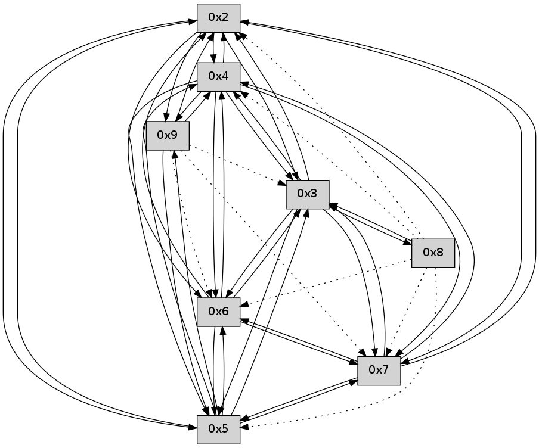

>> << IDX [start] -25 -5 +0 +5 +25 +100 [85.3021039963]
 Previous packets
----------------------------------------------------------------------
80.181145 beacon01(faad) #0 coord=01,02,03,04,05,06,07 cycle=496.0ms assoc
-- color-indic=0 64 a9 7c
80.191113 beacon02(faad) #0 coord=01,02,03,04,05,06,07 cycle=496.0ms assoc 64 fe b9
80.201114 beacon03(faad) #0 coord=01,02,03,04,05,06,07 cycle=496.0ms assoc 64 52 1b
80.211114 beacon04(faad) #0 coord=01,02,03,04,05,06,07 cycle=496.0ms assoc 64 25 6e
80.221115 beacon05(faad) #0 coord=01,02,03,04,05,06,07 cycle=496.0ms assoc 64 89 cc
80.231116 beacon06(faad) #0 coord=01,02,03,04,05,06,07 cycle=496.0ms assoc 64 6c 23
80.241118 beacon07(faad) #0 coord=01,02,03,04,05,06,07 cycle=496.0ms assoc 64 c0 81
80.252192 [Hello(4): seq=56 sym=5,7,6,2,3 sysInfo= stat=5:6,0,0,0/7:2,0,0,0/6:7,0,0,0/2:6,0,0,0/3:8,0,0,0]
80.254421 [Hello(5): seq=56 sym=7,6,4,2,3 sysInfo= stat=7:5,0,0,0/6:2,0,0,0/4:15,0,0,0/2:13,0,0,0/3:13,0,0,0]
80.257104 [Hello(2): seq=56 sym=4,5,7,6,3 sysInfo= stat=4:4,0,0,0/5:5,0,0,0/7:7,0,0,0/6:2,0,0,0/3:9,0,0,0]
80.264285 [Hello(3): seq=56 sym=5,7,6,4,2 sysInfo= stat=5:4,0,0,0/7:2,0,0,0/6:5,0,0,0/4:3,0,0,0/2:7,0,0,0]
----------------------------------------------------------------------
80.747260 beacon01(faad) #0 coord=01,02,03,04,05,06,07 cycle=496.0ms assoc
-- color-indic=0 64 92 4a
80.757229 beacon02(faad) #0 coord=01,02,03,04,05,06,07 cycle=496.0ms assoc 64 c5 8f
80.767229 beacon03(faad) #0 coord=01,02,03,04,05,06,07 cycle=496.0ms assoc 64 69 2d
80.777230 beacon04(faad) #0 coord=01,02,03,04,05,06,07 cycle=496.0ms assoc 64 1e 58
80.787230 beacon05(faad) #0 coord=01,02,03,04,05,06,07 cycle=496.0ms assoc 64 b2 fa
80.797230 beacon06(faad) #0 coord=01,02,03,04,05,06,07 cycle=496.0ms assoc 64 57 15
80.807232 beacon07(faad) #0 coord=01,02,03,04,05,06,07 cycle=496.0ms assoc 64 fb b7
80.820545 [Hello(7): seq=56 sym=2,3,5,6,4 sysInfo= stat=2:5,0,0,0/3:1,0,0,0/5:2,0,0,0/6:1,0,0,0/4:1,0,0,0]
----------------------------------------------------------------------
81.313376 beacon01(faad) #0 coord=01,02,03,04,05,06,07 cycle=496.0ms assoc
-- color-indic=0 64 33 c8
81.323345 beacon02(faad) #0 coord=01,02,03,04,05,06,07 cycle=496.0ms assoc 64 64 0d
81.333345 beacon03(faad) #0 coord=01,02,03,04,05,06,07 cycle=496.0ms assoc 64 c8 af
81.343345 beacon04(faad) #0 coord=01,02,03,04,05,06,07 cycle=496.0ms assoc 64 bf da
81.353345 beacon05(faad) #0 coord=01,02,03,04,05,06,07 cycle=496.0ms assoc 64 13 78
81.363346 beacon06(faad) #0 coord=01,02,03,04,05,06,07 cycle=496.0ms assoc 64 f6 97
81.373347 beacon07(faad) #0 coord=01,02,03,04,05,06,07 cycle=496.0ms assoc 64 5a 35
81.384409 [Hello(4): seq=57 sym=5,7,6,2,3 sysInfo= stat=5:7,0,0,0/7:2,0,0,0/6:8,0,0,0/2:7,0,0,0/3:9,0,0,0]
81.386348 [Hello(3): seq=57 sym=5,7,6,4,2 sysInfo= stat=5:4,0,0,0/7:2,0,0,0/6:5,0,0,0/4:3,0,0,0/2:7,0,0,0]
81.390244 [Hello(2): seq=57 sym=4,5,7,6,3 sysInfo= stat=4:4,0,0,0/5:5,0,0,0/7:8,0,0,0/6:2,0,0,0/3:10,0,0,0]
----------------------------------------------------------------------
81.879491 beacon01(faad) #0 coord=01,02,03,04,05,06,07 cycle=496.0ms assoc
-- color-indic=0 64 08 fe
81.889461 beacon02(faad) #0 coord=01,02,03,04,05,06,07 cycle=496.0ms assoc 64 5f 3b
81.899459 beacon03(faad) #0 coord=01,02,03,04,05,06,07 cycle=496.0ms assoc 64 f3 99
81.909461 beacon04(faad) #0 coord=01,02,03,04,05,06,07 cycle=496.0ms assoc 64 84 ec
81.919461 beacon05(faad) #0 coord=01,02,03,04,05,06,07 cycle=496.0ms assoc 64 28 4e
81.929463 beacon06(faad) #0 coord=01,02,03,04,05,06,07 cycle=496.0ms assoc 64 cd a1
81.939463 beacon07(faad) #0 coord=01,02,03,04,05,06,07 cycle=496.0ms assoc 64 61 03
81.950848 [Hello(7): seq=57 sym=2,3,5,6,4 sysInfo= stat=2:6,0,0,0/3:2,0,0,0/5:2,0,0,0/6:1,0,0,0/4:2,0,0,0]
81.954067 ..2e2100 -- association-request >>>> 0006
81.956296 0006 -- MAC-command=14 payload=00 21 2e ff ff 00 54 5f 01 06 00 70 fa
81.958714 ..2e2100 -- association-request >>>> 0002
81.960969 0002 -- MAC-command=14 payload=00 21 2e ff ff 00 54 a5 01 02 00 be 76
81.963211 0001 -- MAC-command=15 payload=00 21 2e ff ff 00 54 5f 08 00 00 00 38 27
81.964936 0002 -- MAC-command=14 payload=00 21 2e ff ff 00 54 a5 01 02 00 be 76
81.967664 ..2e2100->..2e2100 -- association-response successful addr=0008
81.969162 0001 -- MAC-command=15 payload=00 21 2e ff ff 00 54 a5 09 00 00 00 d6 1c
81.973966 0001 -- MAC-command=15 payload=00 21 2e ff ff 00 54 a5 09 00 00 00 d6 1c
81.977320 ..2e2100->..2e2100 -- association-response successful addr=0009
----------------------------------------------------------------------
82.445604 beacon01(faad) #0 coord=01,02,03,04,05,06,07,09,08 cycle=624.0ms assoc
-- color-indic=0 64 3c f9
82.455583 beacon02(faad) #0 coord=01,02,03,04,05,06,07,09,08 cycle=624.0ms assoc 64 2c 48
82.465581 beacon03(faad) #0 coord=01,02,03,04,05,06,07,09,08 cycle=624.0ms assoc 64 4a c7
82.475582 beacon04(faad) #0 coord=01,02,03,04,05,06,07,09,08 cycle=624.0ms assoc 64 4b 73
82.485582 beacon05(faad) #0 coord=01,02,03,04,05,06,07,09,08 cycle=624.0ms assoc 64 2d fc
82.495583 beacon06(faad) #0 coord=01,02,03,04,05,06,07,09,08 cycle=624.0ms assoc 64 96 65
82.505585 beacon07(faad) #0 coord=01,02,03,04,05,06,07,09,08 cycle=624.0ms assoc 64 f0 ea
82.515588 beacon09(faad) #0 coord=01,02,03,04,05,06,07,09,08 cycle=624.0ms assoc 64 e3 8a
82.525589 beacon08(faad) #0 coord=01,02,03,04,05,06,07,09,08 cycle=624.0ms assoc 64 85 05
82.536980 [Hello(5): seq=58 sym=7,6,4,2,3 sysInfo= stat=7:7,0,0,0/6:2,0,0,0/4:15,0,0,0/2:15,0,0,0/3:14,0,0,0]
82.540958 [Hello(2): seq=58 sym=4,5,7,6,3 sysInfo= stat=4:4,0,0,0/5:5,0,0,0/7:9,0,0,0/6:2,0,0,0/3:10,0,0,0]
82.544939 [Hello(3): seq=58 sym=5,7,6,4,2 sysInfo= stat=5:4,0,0,0/7:2,0,0,0/6:6,0,0,0/4:3,0,0,0/2:8,0,0,0]
82.556401 [Hello(4): seq=58 sym=5,7,6,2,3 sysInfo= stat=5:8,0,0,0/7:2,0,0,0/6:9,0,0,0/2:8,0,0,0/3:9,0,0,0]
----------------------------------------------------------------------
83.159729 beacon01(faad) #0 coord=01,02,03,04,05,06,07,09,08 cycle=624.0ms assoc
-- color-indic=0 64 ac 25
83.169706 beacon02(faad) #0 coord=01,02,03,04,05,06,07,09,08 cycle=624.0ms assoc 64 bc 94
83.179709 beacon03(faad) #0 coord=01,02,03,04,05,06,07,09,08 cycle=624.0ms assoc 64 da 1b
83.189709 beacon04(faad) #0 coord=01,02,03,04,05,06,07,09,08 cycle=624.0ms assoc 64 db af
83.199708 beacon05(faad) #0 coord=01,02,03,04,05,06,07,09,08 cycle=624.0ms assoc 64 bd 20
83.209707 beacon06(faad) #0 coord=01,02,03,04,05,06,07,09,08 cycle=624.0ms assoc 64 06 b9
83.219709 beacon07(faad) #0 coord=01,02,03,04,05,06,07,09,08 cycle=624.0ms assoc 64 60 36
83.229713 beacon09(faad) #0 coord=01,02,03,04,05,06,07,09,08 cycle=624.0ms assoc 64 73 56
83.239715 beacon08(faad) #0 coord=01,02,03,04,05,06,07,09,08 cycle=624.0ms assoc 64 15 d9
83.251417 [Hello(8): seq=0 asym=5,2,3,4 sysInfo= stat=5:0,0,0,0/2:0,0,0,0/3:0,0,0,0/4:0,0,0,0]
83.256373 [Hello(7): seq=58 sym=2,3,5,6,4 sysInfo= stat=2:7,0,0,0/3:3,0,0,0/5:3,0,0,0/6:1,0,0,0/4:3,0,0,0]
83.262883 [Hello(6): seq=58 sym=2,3,5,4,7 sysInfo= stat=2:4,0,0,0/3:3,0,0,0/5:3,0,0,0/4:3,0,0,0/7:0,0,0,0]
----------------------------------------------------------------------
83.873854 beacon01(faad) #0 coord=01,02,03,04,05,06,07,09,08 cycle=624.0ms assoc
-- color-indic=0 64 0d 48
83.883831 beacon02(faad) #0 coord=01,02,03,04,05,06,07,09,08 cycle=624.0ms assoc 64 1d f9
83.893832 beacon03(faad) #0 coord=01,02,03,04,05,06,07,09,08 cycle=624.0ms assoc 64 7b 76
83.903831 beacon04(faad) #0 coord=01,02,03,04,05,06,07,09,08 cycle=624.0ms assoc 64 7a c2
83.913832 beacon05(faad) #0 coord=01,02,03,04,05,06,07,09,08 cycle=624.0ms assoc 64 1c 4d
83.923832 beacon06(faad) #0 coord=01,02,03,04,05,06,07,09,08 cycle=624.0ms assoc 64 a7 d4
83.933832 beacon07(faad) #0 coord=01,02,03,04,05,06,07,09,08 cycle=624.0ms assoc 64 c1 5b
83.943837 beacon09(faad) #0 coord=01,02,03,04,05,06,07,09,08 cycle=624.0ms assoc 64 d2 3b
83.953837 beacon08(faad) #0 coord=01,02,03,04,05,06,07,09,08 cycle=624.0ms assoc 64 b4 b4
83.965253 [Hello(5): seq=59 sym=7,6,4,2,3,9 sysInfo= stat=7:8,0,0,0/6:3,0,0,0/4:0,0,0,0/2:0,0,0,0/3:15,0,0,0/9:0,0,0,0]
83.967307 [Hello(2): seq=59 sym=4,5,7,6,3,9 sysInfo= stat=4:5,0,0,0/5:5,0,0,0/7:10,0,0,0/6:3,0,0,0/3:11,0,0,0/9:0,0,0,0]
83.973192 [Hello(3): seq=59 sym=5,7,6,4,2,8 sysInfo= stat=5:4,0,0,0/7:3,0,0,0/6:7,0,0,0/4:4,0,0,0/2:8,0,0,0/8:0,0,0,0]
83.983878 [Hello(4): seq=59 sym=5,7,6,2,3,9 sysInfo= stat=5:8,0,0,0/7:3,0,0,0/6:10,0,0,0/2:8,0,0,0/3:9,0,0,0/9:0,0,0,0]
----------------------------------------------------------------------
84.587979 beacon01(faad) #0 coord=01,02,03,04,05,06,07,09,08 cycle=624.0ms assoc
-- color-indic=0 64 9d 94
84.597957 beacon02(faad) #0 coord=01,02,03,04,05,06,07,09,08 cycle=624.0ms assoc 64 8d 25
84.607956 beacon03(faad) #0 coord=01,02,03,04,05,06,07,09,08 cycle=624.0ms assoc 64 eb aa
84.617956 beacon04(faad) #0 coord=01,02,03,04,05,06,07,09,08 cycle=624.0ms assoc 64 ea 1e
84.627956 beacon05(faad) #0 coord=01,02,03,04,05,06,07,09,08 cycle=624.0ms assoc 64 8c 91
84.637956 beacon06(faad) #0 coord=01,02,03,04,05,06,07,09,08 cycle=624.0ms assoc 64 37 08
84.647958 beacon07(faad) #0 coord=01,02,03,04,05,06,07,09,08 cycle=624.0ms assoc 64 51 87
84.657961 beacon09(faad) #0 coord=01,02,03,04,05,06,07,09,08 cycle=624.0ms assoc 64 42 e7
84.667962 beacon08(faad) #0 coord=01,02,03,04,05,06,07,09,08 cycle=624.0ms assoc 64 24 68
84.679041 [Hello(7): seq=59 sym=2,3,5,6,4 sysInfo= stat=2:8,0,0,0/3:4,0,0,0/5:4,0,0,0/6:2,0,0,0/4:4,0,0,0]
84.681026 [Hello(8): seq=1 sym=3 asym=5,2,4,7,6 sysInfo= stat=3:1,0,0,0/5:1,0,0,0/2:1,0,0,0/4:1,0,0,0/7:0,0,0,0/6:0,0,0,0]
84.683976 [Hello(6): seq=59 sym=2,3,5,4,7 sysInfo= stat=2:5,0,0,0/3:4,0,0,0/5:4,0,0,0/4:4,0,0,0/7:0,0,0,0]
84.692426 [Hello(9): seq=1 sym=5,2,4 asym=3,7,6 sysInfo= stat=5:1,0,0,0/2:1,0,0,0/4:1,0,0,0/3:1,0,0,0/7:0,0,0,0/6:0,0,0,0]